Han Yeonhwa · 한연화
Người gìn giữ văn hóa · 문화 지킴이. Nhân vật hư cấu, cảm hứng Silla.
Lối tiếp cận review trong thế giớiPhaser native 1:1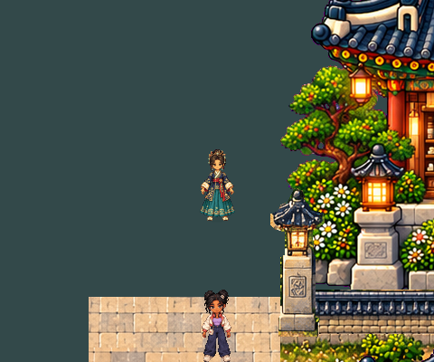
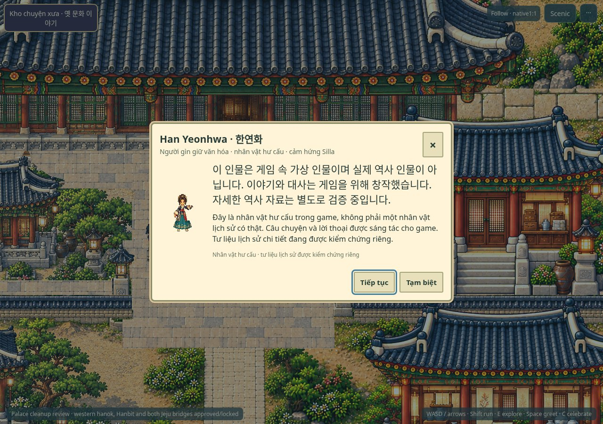
Sáu người bạn dưới đây là nhân vật hư cấu, lấy cảm hứng từ các thời kỳ và nghề nghiệp văn hóa Hàn Quốc. Câu chuyện được sáng tác cho game; họ không phải nhân vật lịch sử có thật.
Vào thế giớiĐây là bản review phát triển, chưa xác nhận quyền phát hành thương mại hay hiệu năng thiết bị thật.
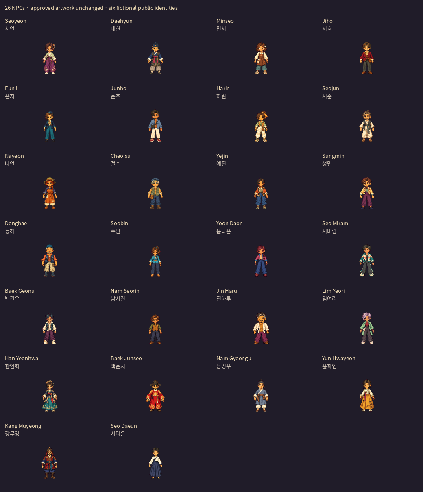
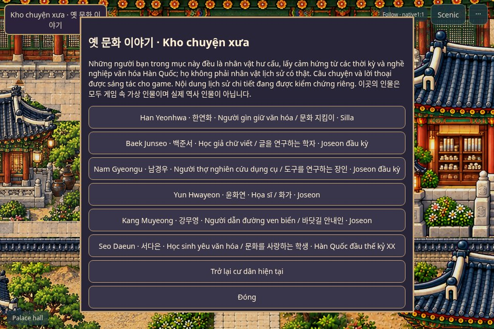
Người gìn giữ văn hóa · 문화 지킴이. Nhân vật hư cấu, cảm hứng Silla.
Lối tiếp cận review trong thế giớiPhaser native 1:1

Học giả chữ viết · 글을 연구하는 학자. Nhân vật hư cấu, cảm hứng Joseon đầu kỳ.
Lối tiếp cận review trong thế giớiPhaser native 1:1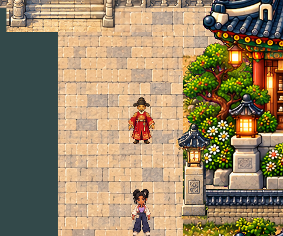
Người thợ nghiên cứu dụng cụ · 도구를 연구하는 장인. Nhân vật hư cấu, cảm hứng Joseon đầu kỳ.
Lối tiếp cận review trong thế giớiPhaser native 1:1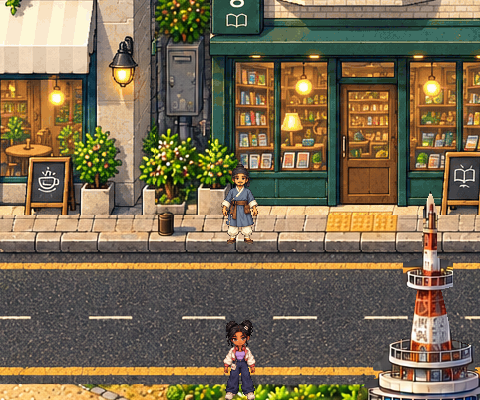
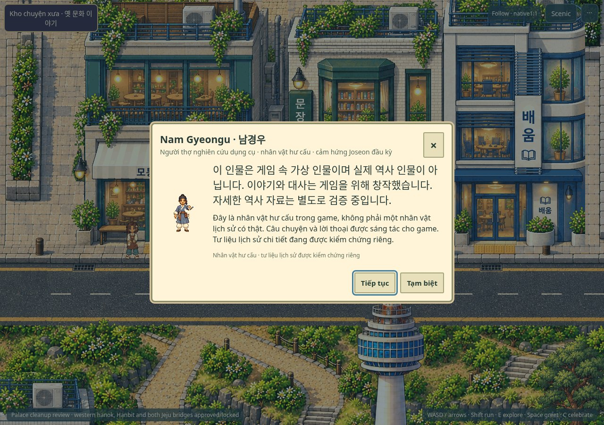
Họa sĩ · 화가. Nhân vật hư cấu, cảm hứng Joseon.
Lối tiếp cận review trong thế giớiPhaser native 1:1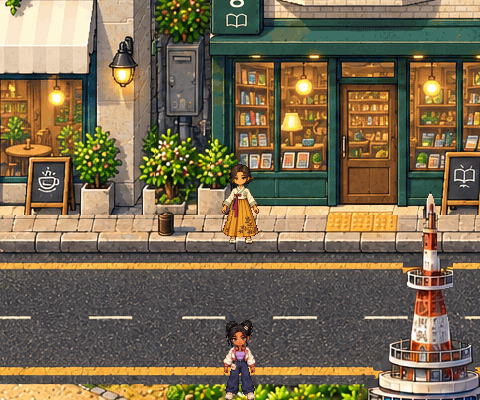
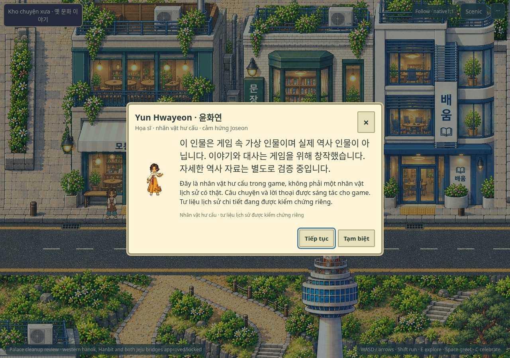
Người dẫn đường ven biển · 바닷길 안내인. Nhân vật hư cấu, cảm hứng Joseon.
Lối tiếp cận review trong thế giớiPhaser native 1:1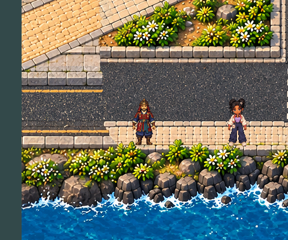
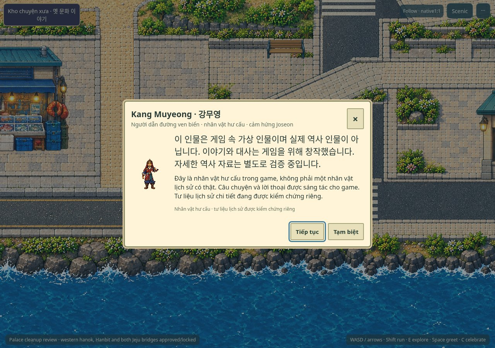
Học sinh yêu văn hóa · 문화를 사랑하는 학생. Nhân vật hư cấu, cảm hứng Hàn Quốc đầu thế kỷ XX.
Lối tiếp cận review trong thế giớiPhaser native 1:1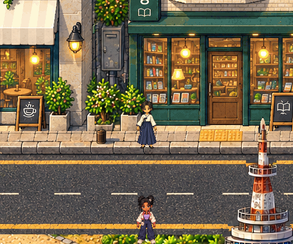
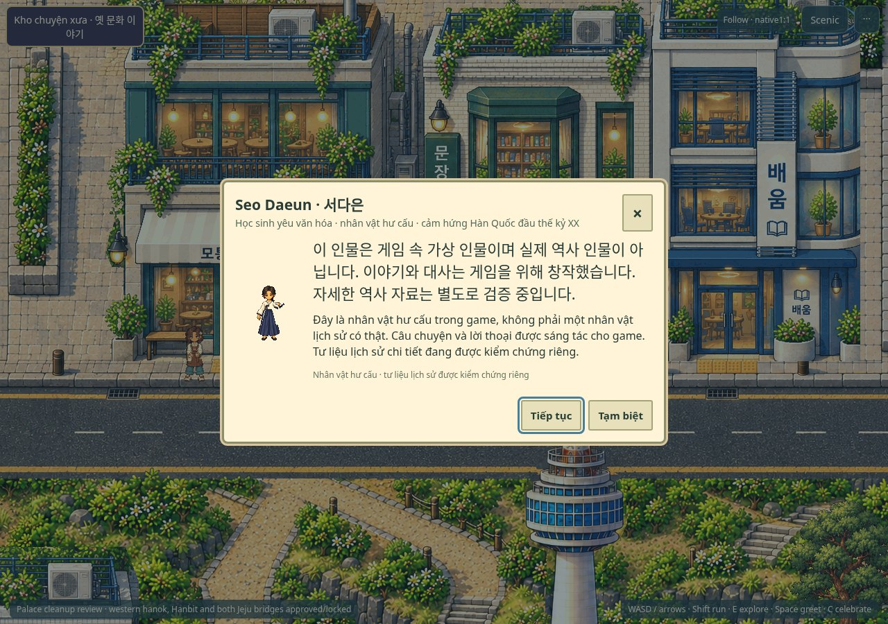
Không triển khai Phase 3B, merge main hoặc deploy trong task này.